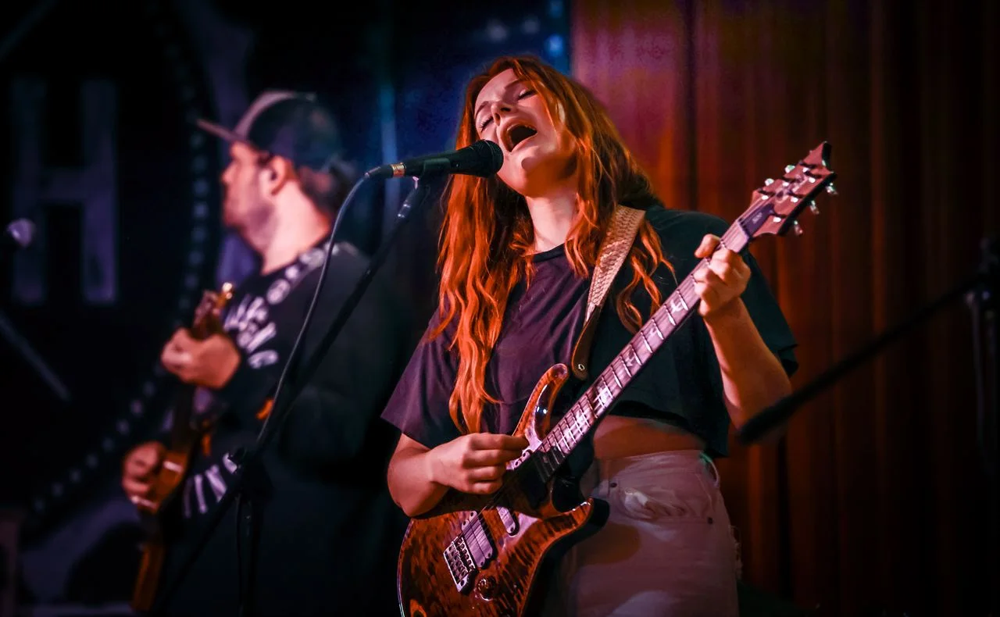
Gigs and live sets, shot from right up by the stage.
Toosh gets as close to the stage as she can, then waits for the moment the band really goes for it: the held note, the chorus, the guitarist leaning into the mic.
She works with whatever the venue’s lights are doing rather than fighting them, so every set comes out looking like its own room, and you can almost hear it.
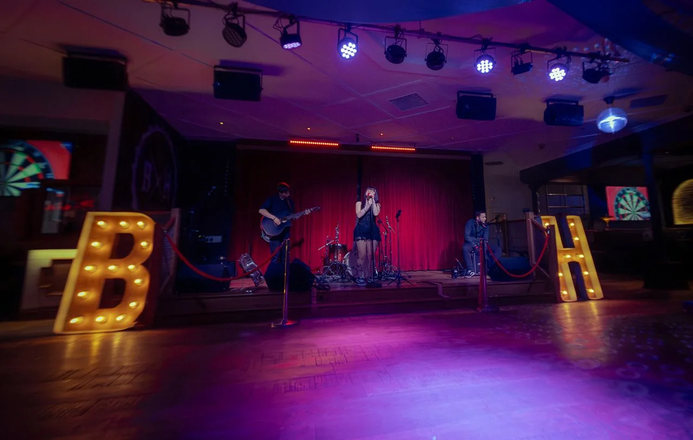
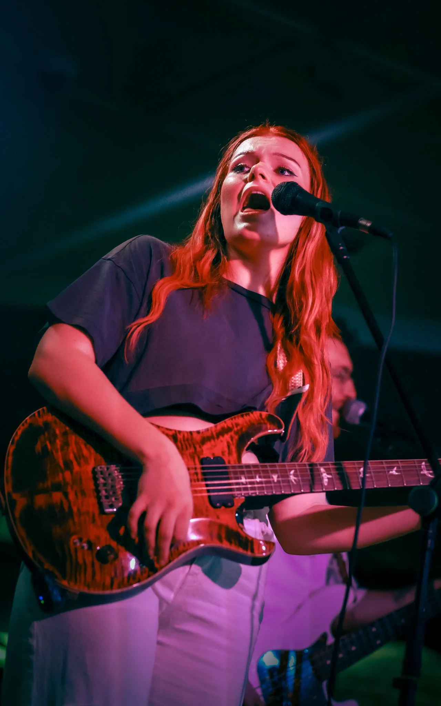
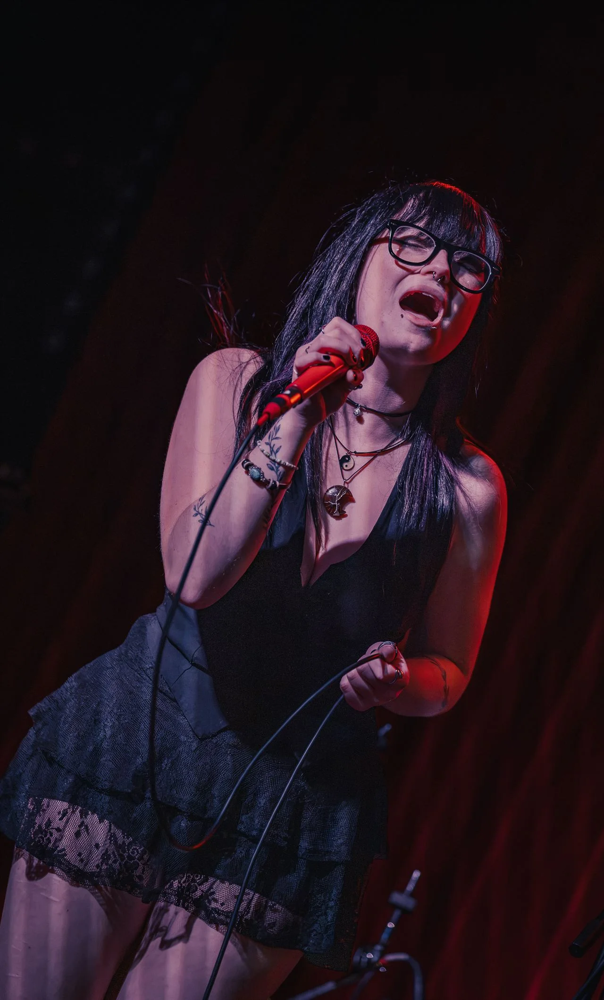
Nothing is staged and nobody is asked to stop. Bands and venues come away with pictures that look the way the night felt, ready for the next poster, post or press kit.
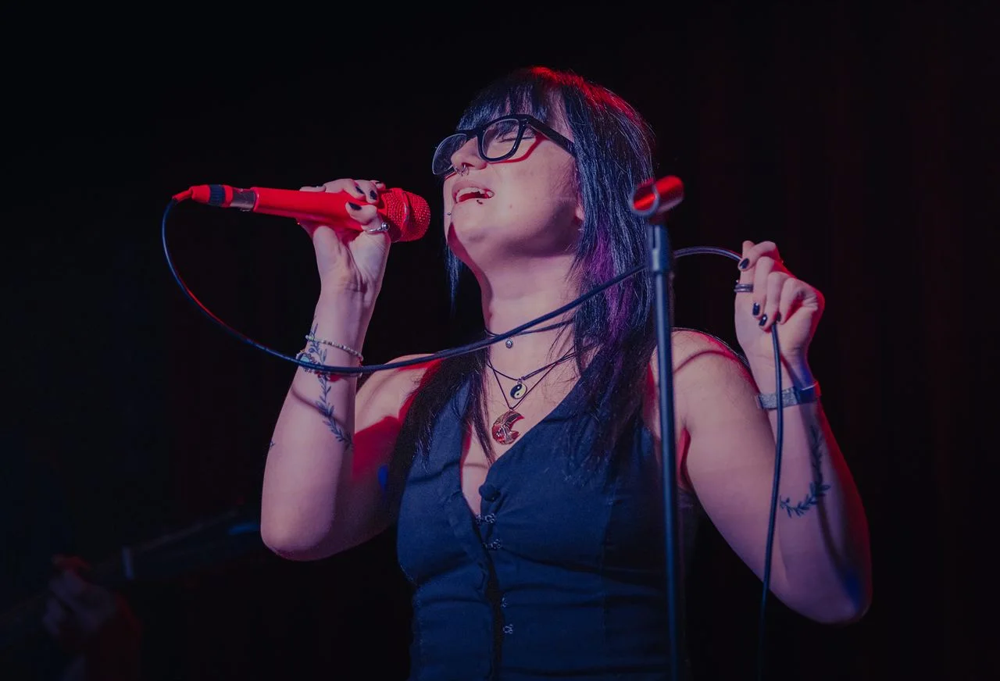
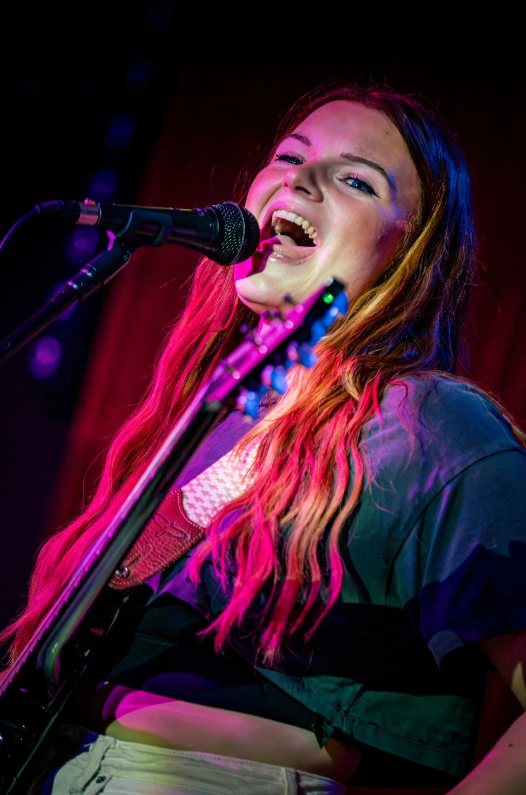
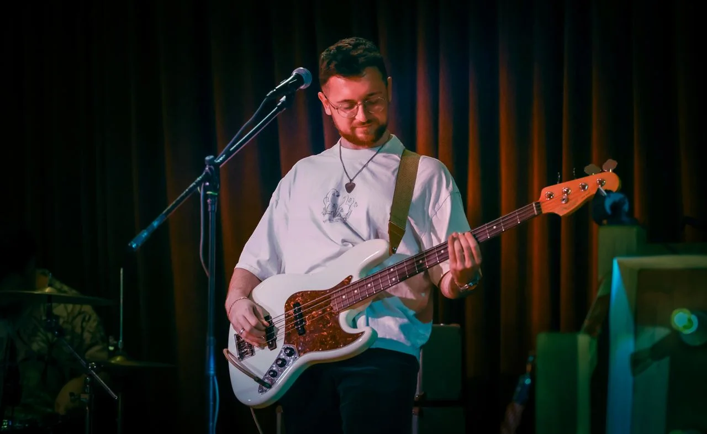
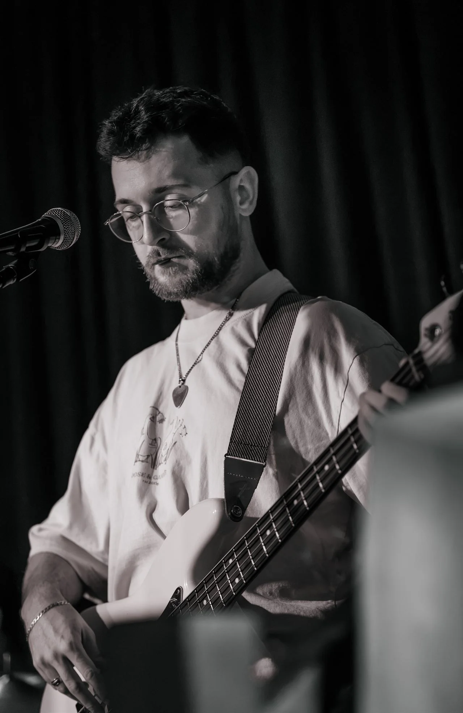
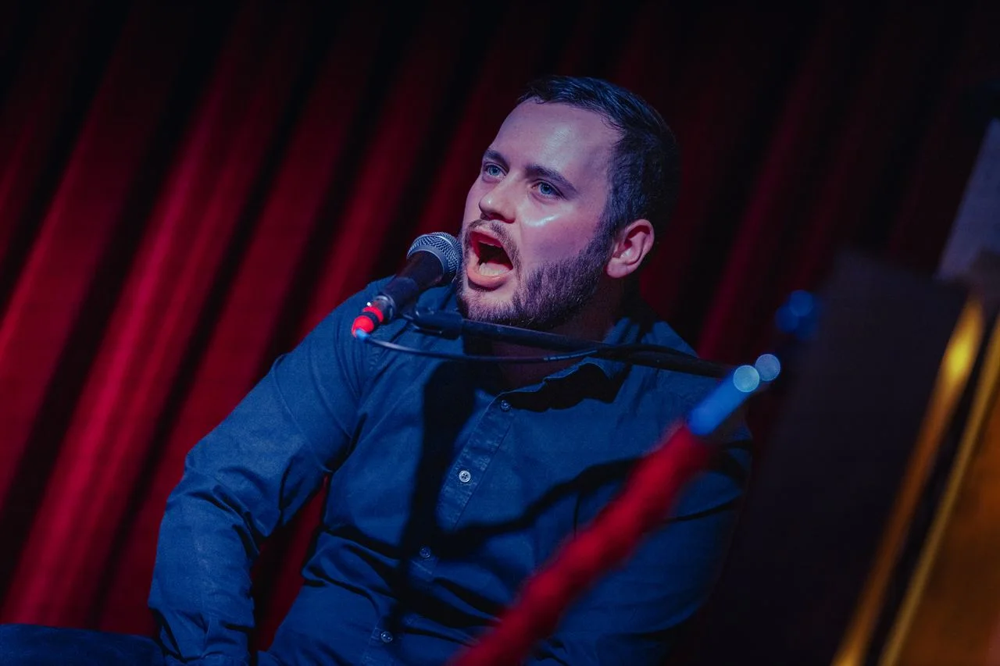
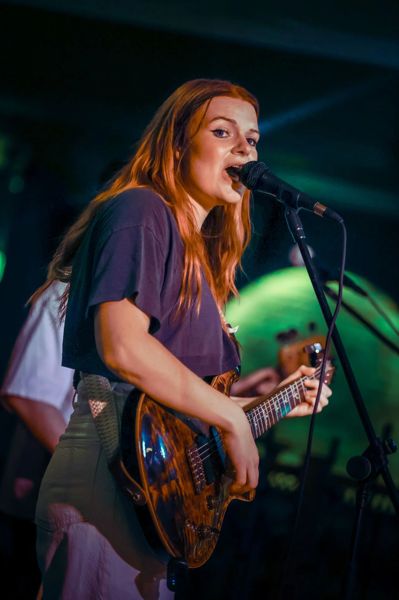
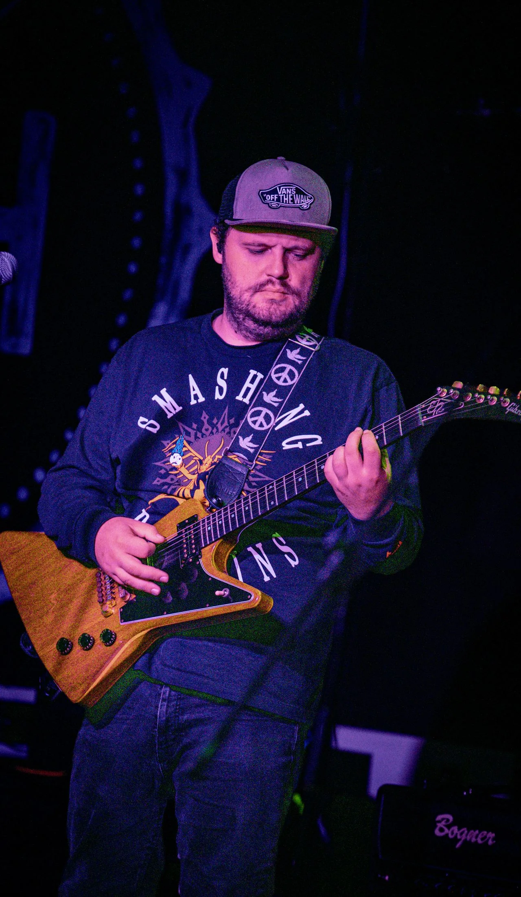
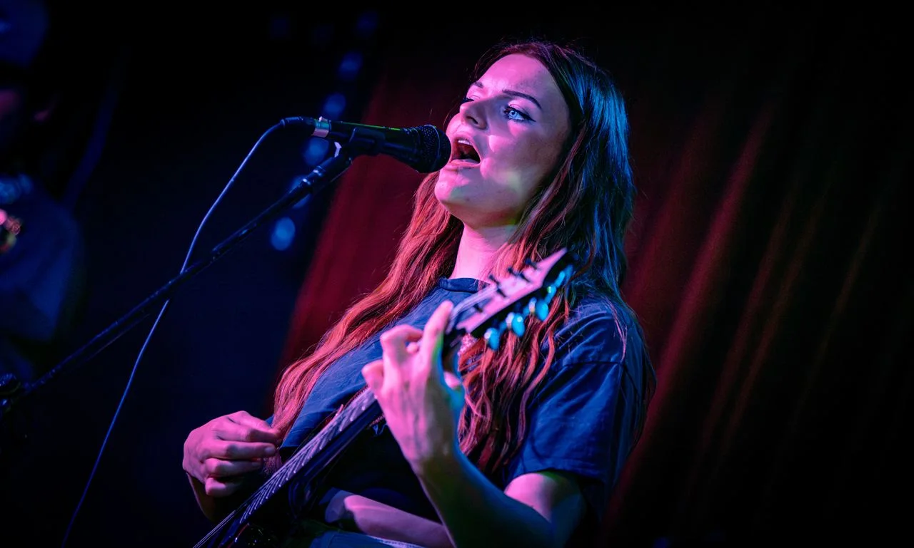
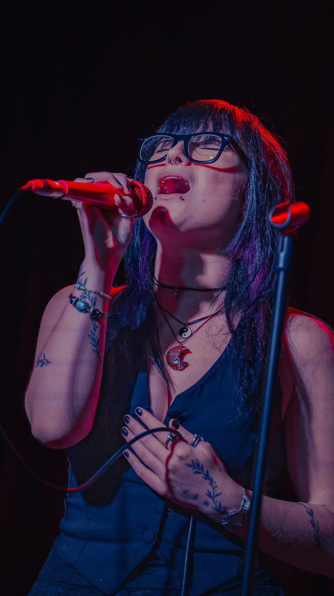
Photographed by Toosh Alzaeem. More of her live work at madebyzoosh.